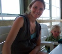

our team
Creating software with cutting-edge tools, building projects, and working with great clients makes my days spin. I have a multi-disciplinary background and a myriad of interests. I left a position as Director of Enterprise Architecture at a large international firm to help form Entryway. The single premise of Entryway is to wield technology in the support of good things both fun and world changing. Working with our team of like-minded folks at Entryway is an added delight. Outside the virtual sphere I enjoy tromping around my land, celebrating nature with my family and newly hatched son -- Loic.
THINGS ABOUT GUSTIN:
- first computer : atari 251
- can't live without : coffee, 2 very large monitors
- current reading : Rails for Superheros, Cormac McCarthy;s "The Road"

Jonathan Greenberg
SOFTWARE DEVELOPER
404-999-9999
Send Jonathan an Email
I have long dreamt of becoming a rurally based programmer and gardener. Entryway has made this dream a reality. I enjoy Ruby/Rails and the NET framework. In my spare time I take great joy from gardening, playing chess, and reading bedtime stories to my son, Gavin. My family and I live in a small homesteading intentional community in Floyd, Virginia, where we are working to build our own home.
THINGS ABOUT JONATHAN:
- first computer : atari 251
- can't live without : coffee, 2 very large monitors
- current reading : Rails for Superheros, Cormac McCarthy;s "The Road"

Katie Robert
DESIGNER
404-999-9999
Send Katie an Email
At Entryway my focus is on administration, quality assurance, usability, feng shui, and stress management for staff and clients. I have experience with e-commerce management and usability, marketing, and design. I am currently studying graphic design at Virginia Western. Things I am interested in: massage therapy, sustainable living practices, and tribal belly dancing. My husband and I live with our two children in Floyd County at Misty Mountain Farm.
THINGS ABOUT KATIE:
- first computer : atari 251
- can't live without : coffee, 2 very large monitors
- current reading : Rails for Superheros, Cormac McCarthy;s "The Road"